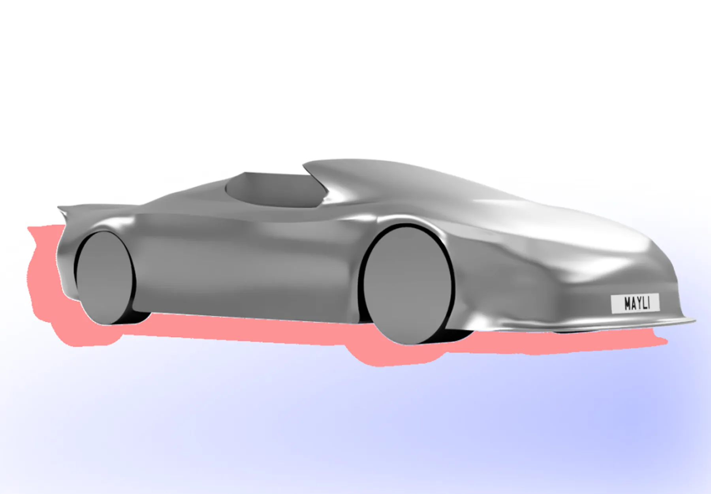
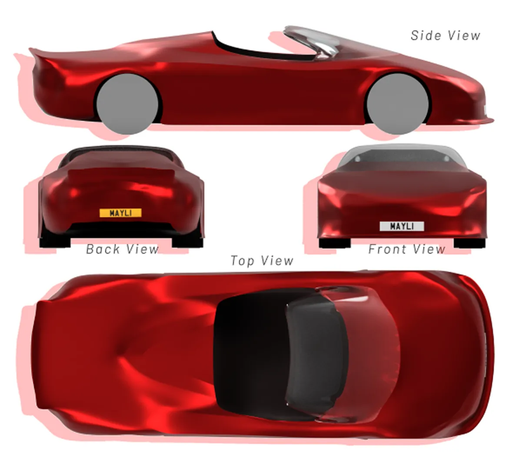
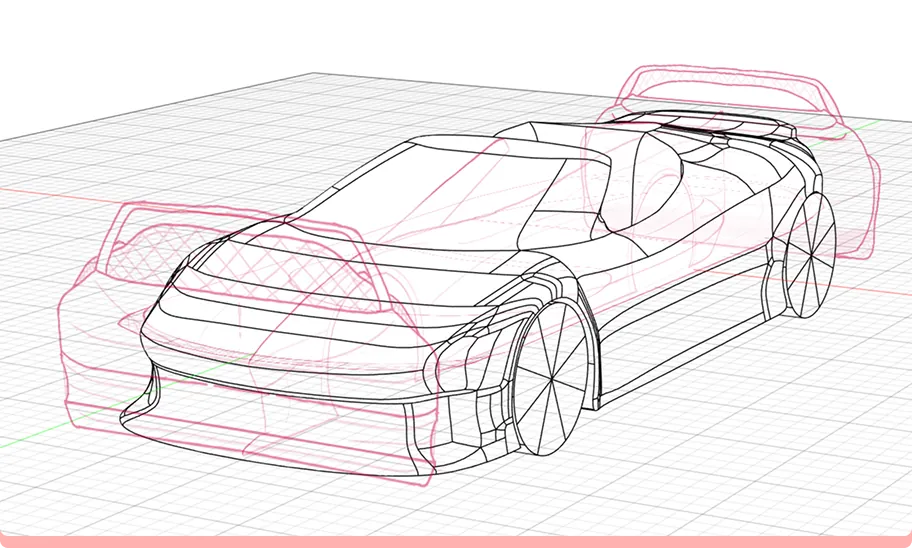
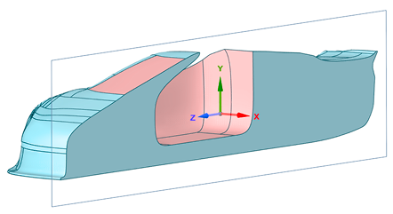
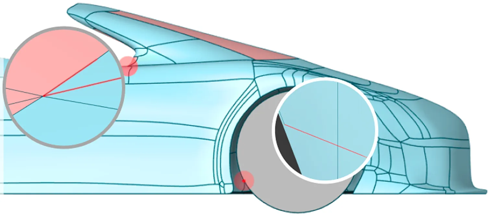
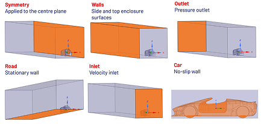
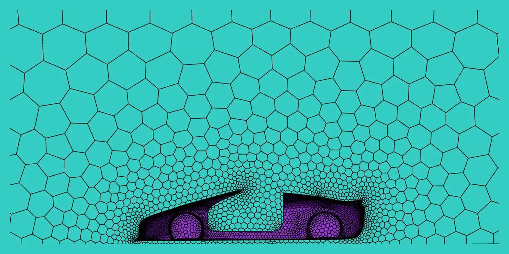
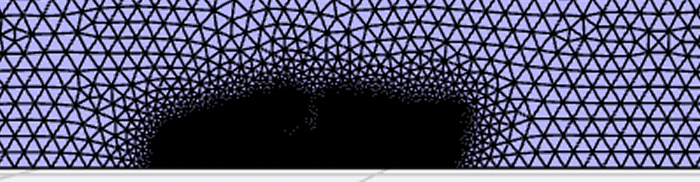
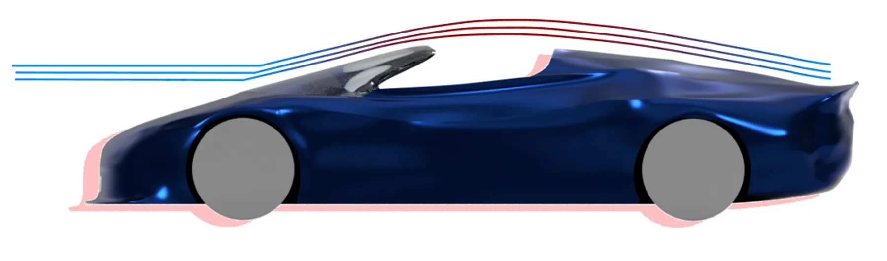

Roadster Aerodynamics
Technical
CFD Analysis (ANSYS Fluent), Meshing and Simulation Setup, Surface Modelling (Fusion 360 Form), Aerodynamic Design, Concept Sketching
Transferable
Benchmarking and Research, Independent Research

The Brief
Roadsters lose aerodynamic efficiency because the open cockpit disrupts airflow and enlarges the wake. The aim was to improve high-speed stability by adding downforce without a large drag penalty, while keeping a realistic, attractive form.
Goals
- Generate downforce for high-speed stability
- Keep the drag penalty small
- Maintain a realistic, attractive roadster form
Research
Benchmarking
- Features that improve the aerodynamics
- Features that could be improved
Porsche Boxster
The Porsche Boxster is benchmarked as a modern two-seat roadster, representing a higher-performance reference for open-top sports-car aerodynamics.
Mazda MX-5
The Mazda MX-5 is benchmarked as a widely used, lightweight roadster, providing a representative baseline for typical open-top road-car aerodynamics.
Comparison
Benchmarking the Porsche Boxster and Mazda MX-5 highlights two contrasting aerodynamic approaches. The Boxster uses active rear lift reduction and underbody shaping to improve high-speed stability, while the MX-5 relies on compact proportions and clean body surfaces to minimise drag through lightweight simplicity. Across both vehicles, drag is mainly driven by rear wake behaviour rather than cabin flow alone. Aerodynamic performance depends on controlling rear separation, with front underbody entry and wake management offering the greatest design impact.
Rear Spoiler Optimisation
Why use a rear lip spoiler?
Open-top roadsters tend to generate rear lift. A rear lip spoiler fixes where the flow separates at the rear edge, reducing lift and improving high-speed stability. Kept small, it adds downforce with very little extra drag.
Audi TT Benchmark
The first-generation Audi TT was fitted with a rear spoiler after reports of high-speed instability. The added lip reduced rear lift and improved stability at motorway speeds.
What affects performance
- Height: how strongly the flow is redirected
- Edge sharpness: where separation occurs
- Kick-up angle: the balance between downforce and drag
Small to moderate spoilers can stabilise the wake and improve stability with minimal drag penalty, which is why a lip spoiler was chosen over a larger wing.
Splitter
Why use a splitter?
A front splitter controls how air enters the underbody. By restricting high-pressure air from flowing beneath the car, it raises pressure on top of the splitter and lowers pressure underneath. This creates front downforce and reduces front lift.
Porsche 911 Splitter Benchmark
- Underbody flow restriction: limits high-pressure air entering beneath the car, lowering front lift.
- Clear separation edge: defines where airflow detaches at the bumper, improving pressure control.
- Low-profile integrated design: keeps ground clearance while generating efficient front downforce.
Front-End Pressure Management
Front-end shape controls how stagnation pressure forms at the nose and how smoothly air accelerates over the bonnet. Abrupt geometry creates strong pressure gradients and early separation, while gradual curvature spreads pressure more evenly and delays separation.
Flat front
Creates a concentrated stagnation region and abrupt separation, producing a large wake and high pressure drag.
Circular front
Smooths the stagnation region and delays separation compared with a flat face, but still produces a relatively large wake.
Teardrop
Spreads pressure gradually and keeps flow attached, minimising wake size and reducing drag.
Rear Deck Pressure Recovery
Rear-end geometry determines how smoothly pressure recovers before the flow separates. A gradual taper reduces wake size and pressure drag, while an abrupt cut-off causes early separation and a large low-pressure wake.
Volkswagen XL1 Benchmark
The XL1's long, gradual taper is near-ideal for minimising pressure drag.
- Airflow slows down gradually before leaving the car
- Flow stays attached longer, so separation happens further back
- A smaller wake and higher rear pressure reduce pressure drag
Sketch Development
Concepts explored nose shape, windscreen angle, splitter size and rear length, with each iteration responding to the limitations of the last.
Final Design
The final iteration best balances stable downforce with low pressure drag for an open-top roadster. The smooth bonnet-to-windscreen line reduces front pressure, while the splitter and spoiler give front and rear stability. A longer rear allows more gradual pressure recovery, helping produce a smaller, more organised wake.
CAD
- 1:17Scale
- 290 mmLength
- 110 mmWidth
- 55 mmHeight


Modelling Process
The car was modelled in the Fusion 360 Form workspace to achieve smooth, continuous curvature. Orthographic sketches were drawn first and used as references to build the body around.
I kept a four-sided (quad) polygon topology wherever possible. This reduced surface irregularities and helped prevent meshing issues in the CFD.
The frontal area (6,129 mm² at model scale) was measured in Fusion 360 for use in the drag coefficient calculation.
CFD Setup
The aerodynamics were simulated in ANSYS Fluent at 30.5 m/s (68 mph) to find the drag and lift on the car.





The car is symmetric, so only half was modelled, halving simulation time. The frontal area was halved to match.
Six short edges were found and repaired before meshing. Left in, they create tiny mesh cells that increase cell count and can cause poor convergence.
A box of air was built around the car, extending five car lengths behind it so the wake could fully develop. The blockage ratio was 3.37%, under the 5% limit, so the walls didn't affect the flow. I set a velocity inlet, pressure outlet, symmetry plane, stationary road and a no-slip wall on the car.
A local sizing of 1 mm was applied around the car to capture sharp flow changes at the nose, over the roof curvature and at the rear, with cells growing coarser further away.
The enclosure was filled with 3D cells, with a boundary layer on the car's surface for near-wall accuracy. The final mesh had 484,775 cells.
Solver Setup
Solver
Steady pressure-based solver, since the aim was one converged drag value at constant speed.
Turbulence model
k-epsilon, to capture the turbulent mixing that drives the wake and overall drag.
Numerics
SIMPLE algorithm with second-order upwind discretisation for accuracy in fast-changing regions like the wake.
Results
- Cd 0.398In the typical range for open-top roadsters
- Cl −0.135Moderate downforce, comparable to a Porsche 911 (997)
- ~136 NDownforce at 68 mph, scaled to full size
- |Cl|/Cd 0.34Within the performance road car range
What worked
- Flow stays attached over the bonnet and curved sides
- The splitter creates a fast underbody jet, generating front downforce
- The spoiler turns the flow upward, generating rear downforce
Limitations
- Rear flow separation creates a large wake, adding drag
- Air recirculates inside the open cockpit, wasting energy
- Side inflow into the cabin feeds that recirculation
Flow Visualisations
Convergence
The drag and lift coefficients settled quickly and stayed stable, and all residuals levelled off at around 200 iterations, showing the solution had converged. The run was set to 500 iterations but stopped at around 200 once the convergence criteria were met.
Proposed Refinements
Based on the CFD results, I refined the CAD model to tackle the two main issues: rear flow separation and air recirculating in the cockpit. These changes were not re‑simulated, so their effects are expected rather than tested.

Raised rear hump
A higher hump should guide the upper flow to follow the body for longer, delaying separation, shrinking the wake and improving rear pressure recovery.
Extended rear
A longer rear gives a more gradual reduction in area, lowering the pressure gradient at the back. This should delay separation and reduce the wake.
Cabin-edge lips
Small lips along the cabin edges act as flow deflectors, steering air down and rearward instead of into the cockpit. Less side inflow should weaken the vortex inside the cabin.
Design Intent
The rear changes aim to delay separation and reduce the wake, while the cabin-edge lips limit side flow and calm the recirculation inside the cockpit. Together, they're expected to improve overall aerodynamic efficiency.